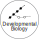

We are a team of computational biologists and data scientists at St. Anna Children's Cancer Research Institute (CCRI). It is our goal to understand developmental processes in cancer biology by employing an integrative approach that combines developmental biology with functional genomics, data analytics, and mathematics.

We trace (aberrant) changes in cells during development.
Past: Hematopoiesis, immunity, and cancer
Cell Stem Cell 2016;
Science 2016;
Cancer Discov. 2019
Now: Using in vitro differentiation to make sense of intra-tumor plasticity

We map regulatory networks that shape cell identity.
Past: Stem cell transcription factors
Cell Stem Cell 2012, 2013;
eLife 2017;
EMBO J. 2018
Now: Dissecting effects of oncogenic mutations in key regulators

We develop tools that connect pieces of data into knowledge.
Past: Wet- and dry-lab tools and resources
Nat. Methods 2012;
Nat. Biotechnol. 2016;
Cell Stem Cell 2018
Now: Machine learning to translate complex data into simpler components
Find out more about our research here! Do you have the know-how, creativity, and passion to join the quest? We're hiring!